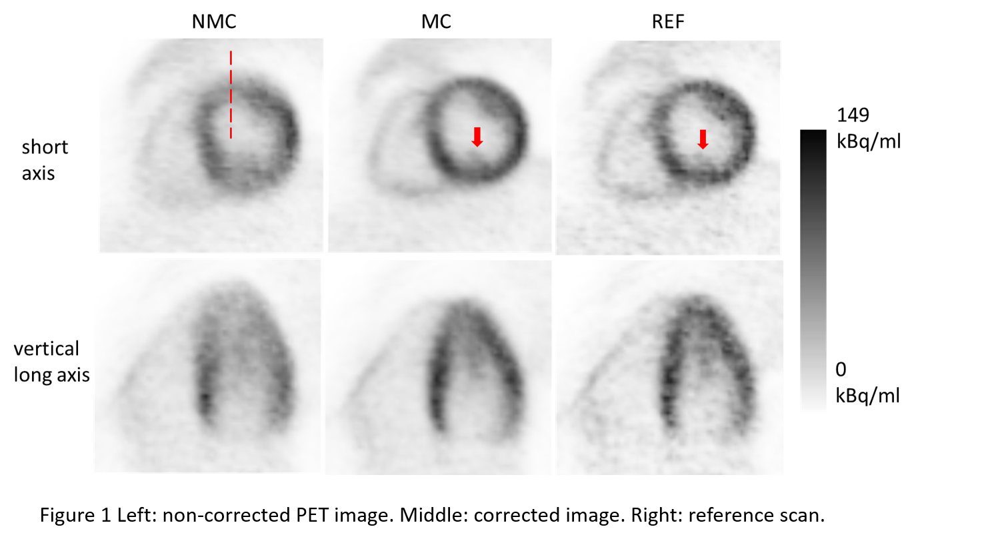
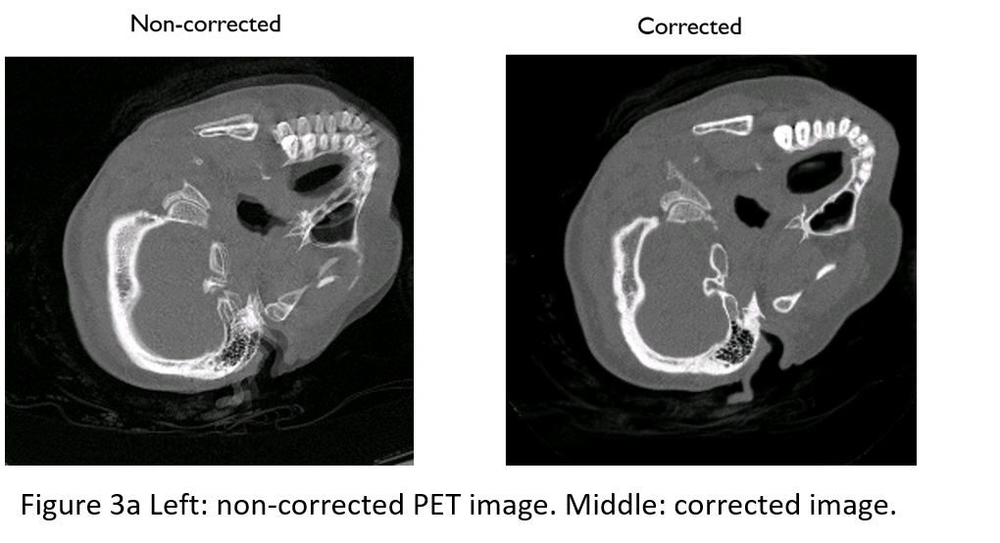
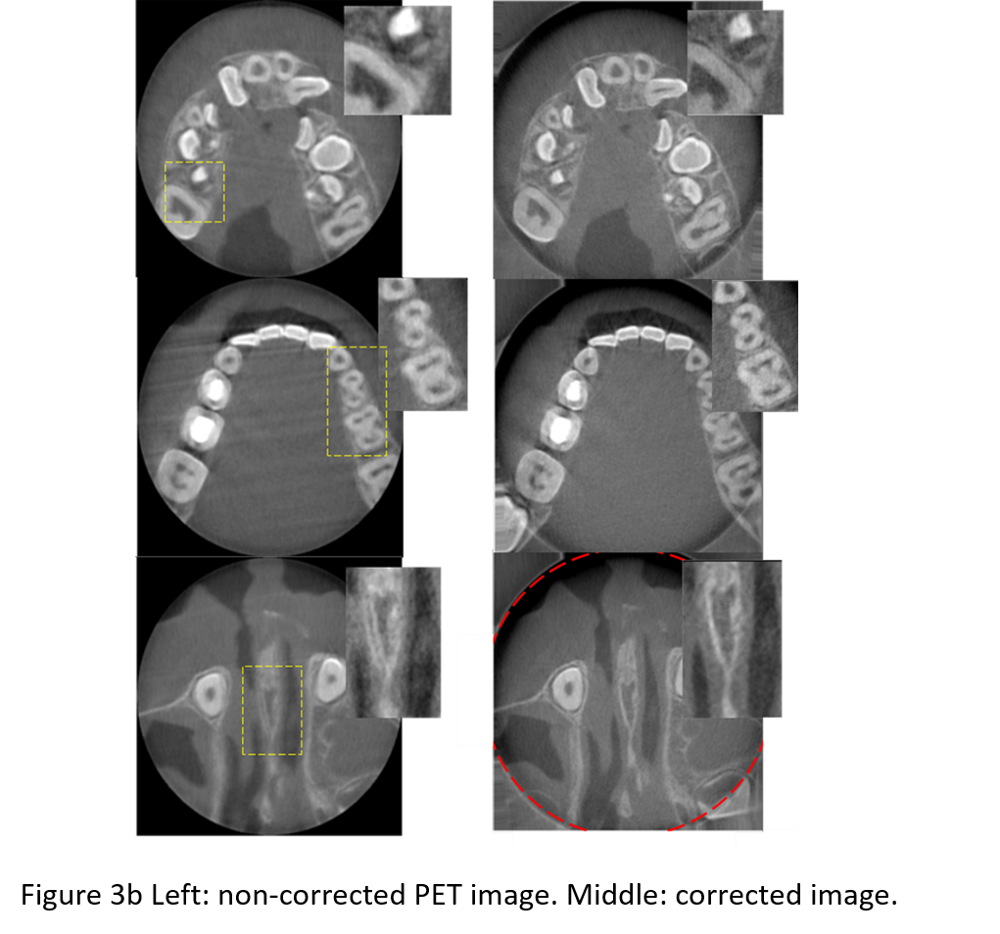
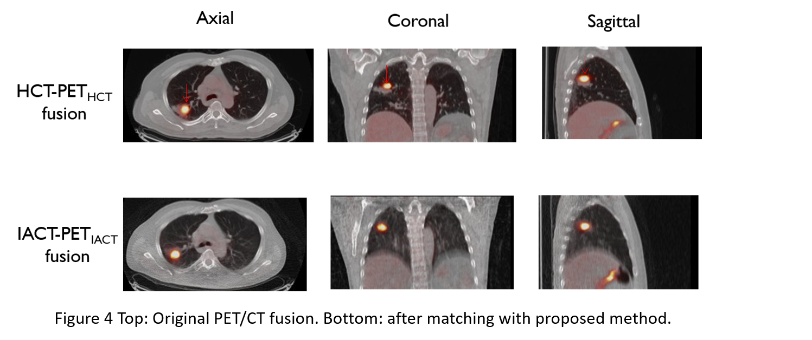

|
研究课题
全身PET成像新技术
The overall goal is to faciliatet the total-body PET imaging by developing a series of novel imaging techniques.
(1) Develop methods for dynamic image quality improvement; (Sun et al. Phys. Med. Biol. 2022)
(Sun et al. EJNMMI Physics 2022)
(Wang et al. IEEE TMI 2024)
(2) Propose and optimize simpified scan protocols, and their associated parametric analysis; (Wang et al. EJNMMI Physics 2022)
(Zhao et al. EJNMMI 2024)
Please also see our review (Sun et al. iRadiology 2024)
(Chen et al. iRadiology 2024)
(Wu et al. JNM 2024)
全身PET分析新技术
Working closely with our clinical collaborators, the research topics include but not limited to:
(1) Investigate network connectivity analysis approach for whole-body and brain images; (Sun et al. EJNMMI 2022)
(Ding et al. Cerebral Cortex 2023)
(Chen et al. IEEE Transactions on Consumer Electronics)
(2) Find translational applications for which dynamic imaging can offer significant values over conventional way. (Shen et al. Front. Aging Neurosci. 2022)
(Wumener et al. Front. Oncol. 2022)
(Wumener et al. BMC Pulmonary medicine 2024)
(Du et al. EJNMMI Physics 2024)
心脏PET的运动校正
Motion of the myocardium deteriorates the quality and quantitative accuracy of cardiac PET images.
We propose and evaluate a novel method to detect, estimate, and correct body motion in cardiac PET.
Our method consists of three key components: motion detection, motion estimation, and motion-compensated
image reconstruction.Visually, the motion-corrected (MC) PET images obtained by the proposed method have
better quality and fewer motion artifacts than the images reconstructed without motion correction (NMC).
Quantitative analysis indicates that MC yields higher myocardium to blood pool concentration ratios. MC
also yields sharper myocardium than NMC.(Sun et al. Med. Phys. 2019)

We also present a method for MR-based cardiac and respiratory motion correction of cardiac PET data and
evaluate its impact on estimation of activity and kinetic parameters in human subjects. The results
shows that MR-based motion correction of cardiac PET results in improved image quality that can
benefit both static and dynamic studies.(Petibon et al. Phys. Med. Biol. 2019)

头部CT的运动校正
Although current computed tomography (CT) systems can scan the head in a very short time, patient motion sometimes
still induces artifacts. If motion occurs, one has to repeat the scan; to avoid motion, sedation or anesthesia is
sometimes applied. The authors propose a method to iteratively estimate and compensate this motion during the reconstruction.
In the patient studies, most of the motion blurring in the reconstructed images disappeared after the compensation.
Since only measured raw data are needed for the motion estimation and compensation, the proposed method can be applied
retrospectively to clinical helical CT scans affected by motion. Recently this method has been extened to be applied to dental and maxillofacial
CBCT scan as well, which demonstrated promising results.
(Sun et al. Med. Phys. 2016)
(Kim et al. Phys. Med. Biol. 2016)
(Sun et al. Phys. Med. Biol. 2022)
 
PET/CT衰减矫正
The temporal mismatch between PET and standard helical CT (HCT) causes substantial respiratory artifacts in PET reconstructed
images when using HCT as the attenuation map. We developed an interpolated average CT (IACT) method for attenuation correction
(AC) and demonstrated its merits in simulations. In this study we aim to apply IACT in patients with thoracic lesions using an
active breathing controller (ABC). IACT-ABC reduces respiratory artifacts, PET/CT misregistration and enhances lesion quantitation.
This technique is a robust and low dose AC protocol for clinical oncology application especially in the thoracic region.
(Sun et al. 2013 Med. Phys.)

|